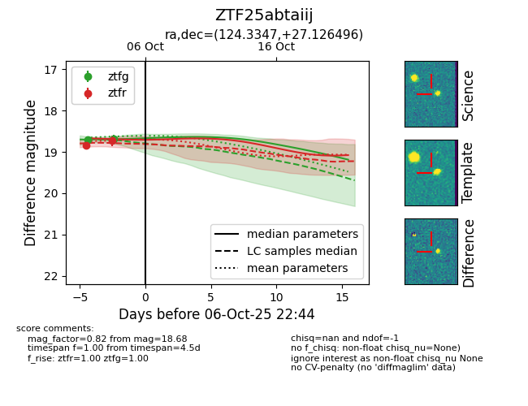
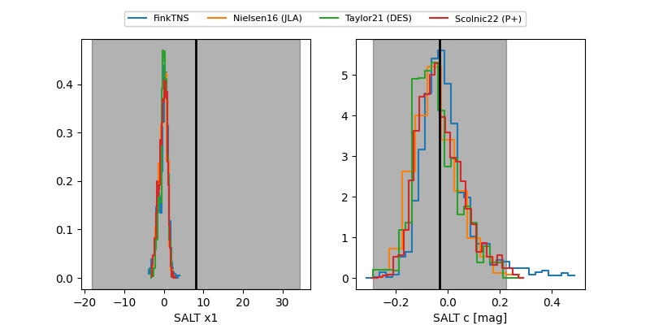

FINK: ZTF25abtaiij
Lasair: ZTF25abtaiij
ALeRCE: ZTF25abtaiij
ZTF25abtaiij (ztf,fink)
equatorial (ra, dec) = (124.3347,+27.12650)
galactic (l, b) = (195.6784,+29.86070)


last ztfg=18.68, ztfr=18.73
2 ztfg, 2 ztfr detections